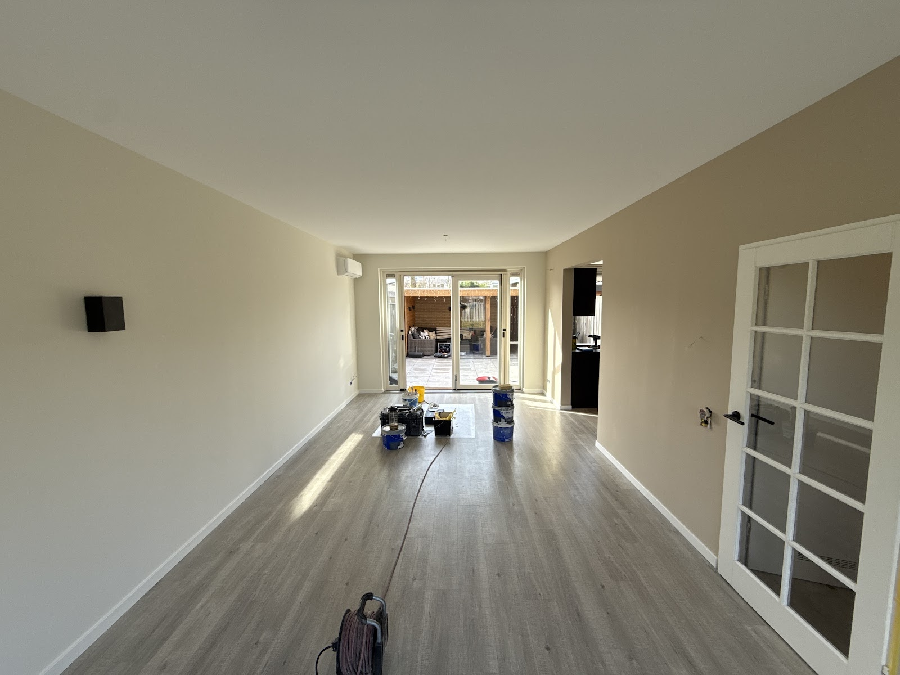
Schilderwerk binnen
Wanden, plafonds, deuren en kozijnen in elke kleur die u wilt, voor woning of bedrijfspand. Twijfelt u over kleur? Daar denk ik graag over mee.
Gediplomeerd vakschilder in Arnhem
Ik ben Nick Baaijens, allround schilder met ruim 20 jaar ervaring. Binnen, buiten en monumentaal, en loop ik tegen houtrot of een kapotte ruit aan, dan los ik dat meteen op. U heeft één aanspreekpunt, van advies tot de laatste kwast.
5,0 op Google, uit 20 reviews
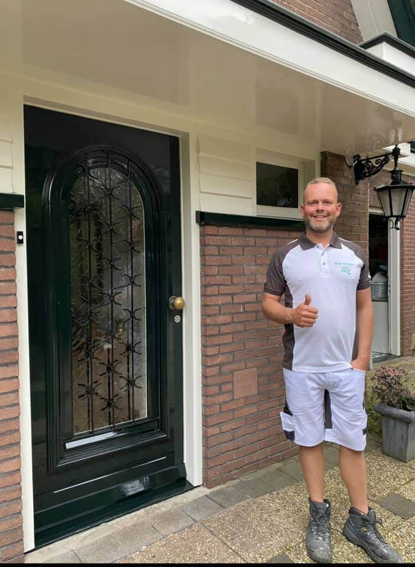
★★★★★
"altijd perfecte service en gericht advies qua kleuren en opties. zeker de beste schilder van Arnhem en omstreken. niks is teveel gevraagd en als je een schilder zoekt die streeft naar perfectie is dit je schilder!"
Dylan Gerritsen, via Google
Kom ik tijdens het werk iets tegen dat aandacht nodig heeft, dan overleg ik dat met u en pak ik het direct aan. Zo hoeft u geen andere bedrijven in te schakelen.

Wanden, plafonds, deuren en kozijnen in elke kleur die u wilt, voor woning of bedrijfspand. Twijfelt u over kleur? Daar denk ik graag over mee.
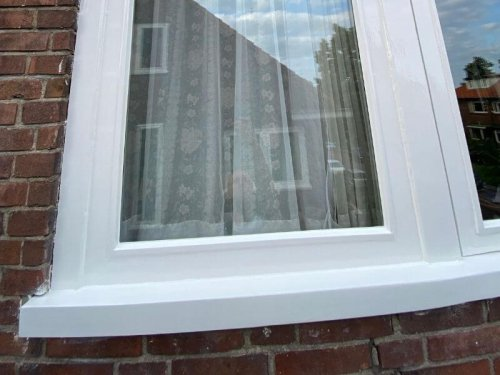
Goed buitenschilderwerk beschermt uw huis tegen vocht en weer. Ik werk alleen met de beste materialen.
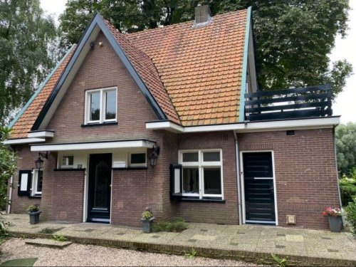
Monumentale panden houden met het juiste schilderwerk hun authentieke uitstraling en zijn beschermd tegen invloeden van buitenaf. Ook extra grote panden zijn geen probleem.
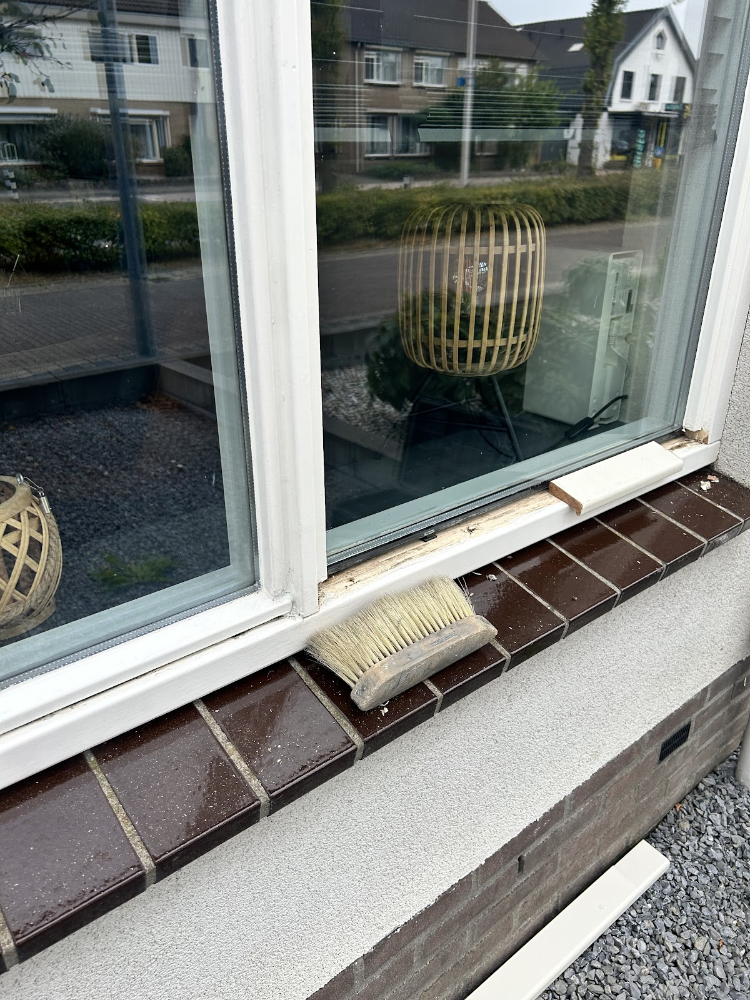
Aangetast hout eruit, gericht herstel met een speciaal vulmiddel en daarna strak in de verf. Vaak hoeft het complete kozijn niet vervangen te worden.
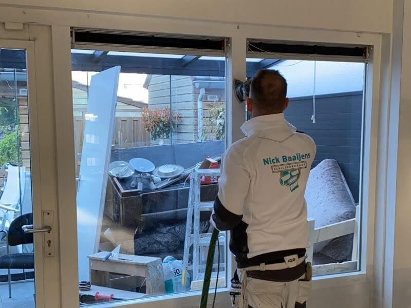
Enkel of dubbel glas, van enkel naar dubbel voor betere isolatie, en nieuwe neuslatten tegen vocht.
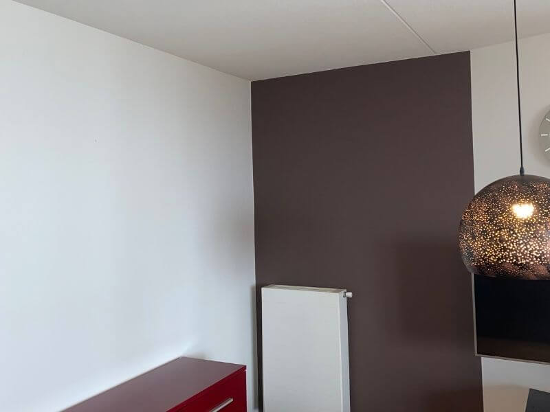
Verven, behangen en wanden en plafonds weer laten stralen, ook in monumentale panden.
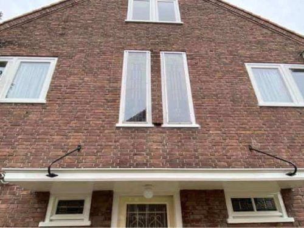
Een schone gevel geeft uw huis een frisse uitstraling en gaat houtrot en verwering tegen.
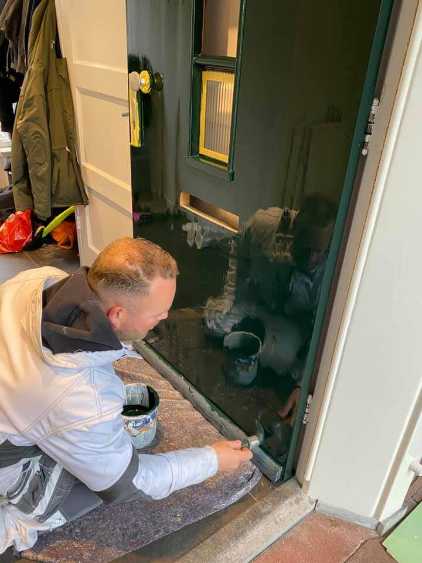
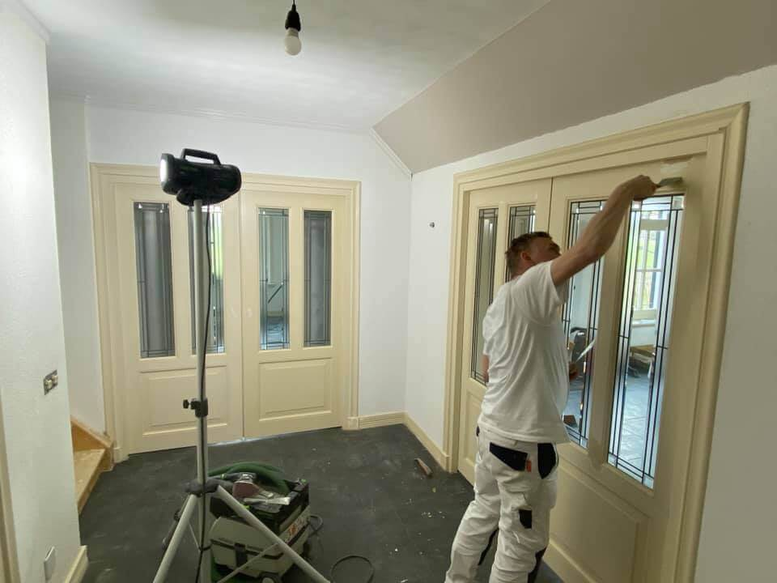
We beginnen met een vrijblijvend adviesgesprek. Ik kijk wat uw schilderwerk nodig heeft en u krijgt een offerte op maat. Tijdens het werk houd ik het netjes en probeer ik zo min mogelijk tot last te zijn.
5,0 uit 20 Google-reviews
"Wij zijn zeer tevreden over Nick. Hele huis aan de buitenkant laten schilderen met veel houtrot. Al het meerwerk is in overleg uitgevoerd. De prijs is goed in verhouding en het resultaat is zeer goed."
"Nick komt zijn afspraken na, is een vakman en werkt netjes. Een aanrader!"
"Nick heeft al twee keer over bij ons het schilderwerk gedaan. Behalve dat hij super goed werk levert, is het ook een fijn persoon om in huis aan het werk te hebben. Heel netjes, flexibel en probeert zo min mogelijk tot last te zijn. Ik zou Nick zeker aanraden!!"
"Ik ben zeer tevreden over het schilderwerk van zowel de binnen- als buitenzijde van mijn woning. Nick levert vakwerk van hoge kwaliteit. Een aanrader voor wie op zoek is naar een betrouwbare en vakkundige schilder."
"Nick is een vakman en neemt geen genoegen met minder dan perfectie! Onze keuken en hal zien er top uit."
"Werkt netjes en is ook nog eens gezellig!!"
Vanuit Arnhem werk ik in heel Gelderland. U vindt mijn werk onder meer terug in:
Arnhem, Doorwerth, Heelsum, Oosterbeek, Renkum, Huissen, Rozendaal, Velp, Westervoort, Heteren, Driel, Wolfheze, Duiven en Elst.
Bel of mail voor een vrijblijvend adviesgesprek of een offerte op maat.
06 42092120 info@nickbaaijensschilderwerken.nlDoctor Christine Baderstraat 9
6836 PD Arnhem
Maandag t/m vrijdag
08:30 tot 18:00
Zaterdag en zondag gesloten
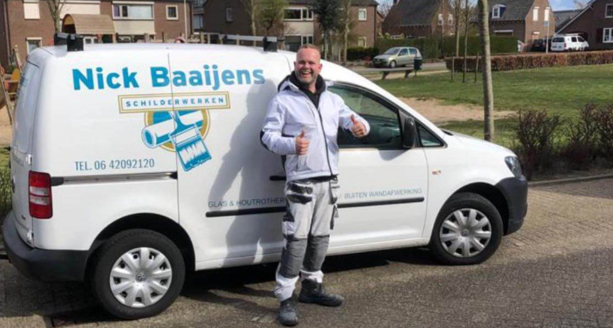